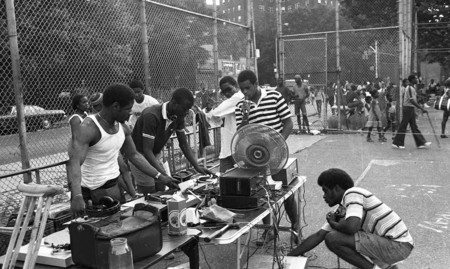

Con el trap mejor dejar los prejuicios a un lado. Además, una de las ventajas del trap es que no es necesario tener una gran voz -democratiza la música- ya que eso lo puede solventar el autotune que, aviso a marineros, no era solamente cosa de Cher y que a la larga puede llegar a engancharte.

En concreto, fue en el sur de Estados Unidos a inicios de los 90 cuando comenzó a hacerse popular, sobre todo entre raperos de raza negra aficionados al hip hop en ciudades como Atlanta. "El sonido del trap no es latino".
La música trap usa sintetizadores, cajas rítmicas, sub-graves, hi-hats de subdivisión binaria o ternaria y uso del auto-tune y los modos armónicos menores para darle una estética oscura y triste.
Vocal · sintetizador · sampler · caja de ritmos
En concreto, fue en el sur de Estados Unidos a inicios de los 90 cuando comenzó a hacerse popular, sobre todo entre raperos de raza negra aficionados al hip hop en ciudades como Atlanta.
